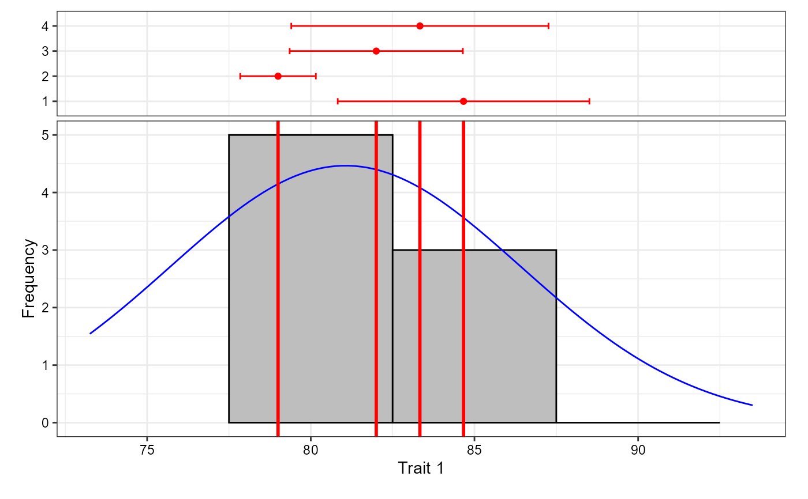
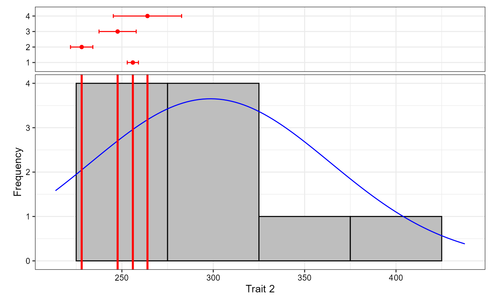
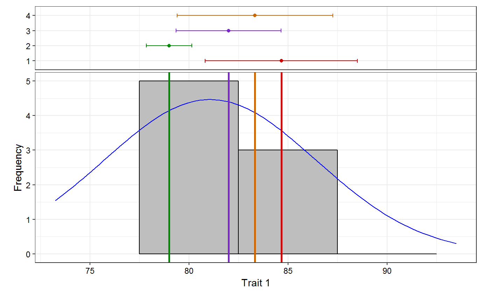
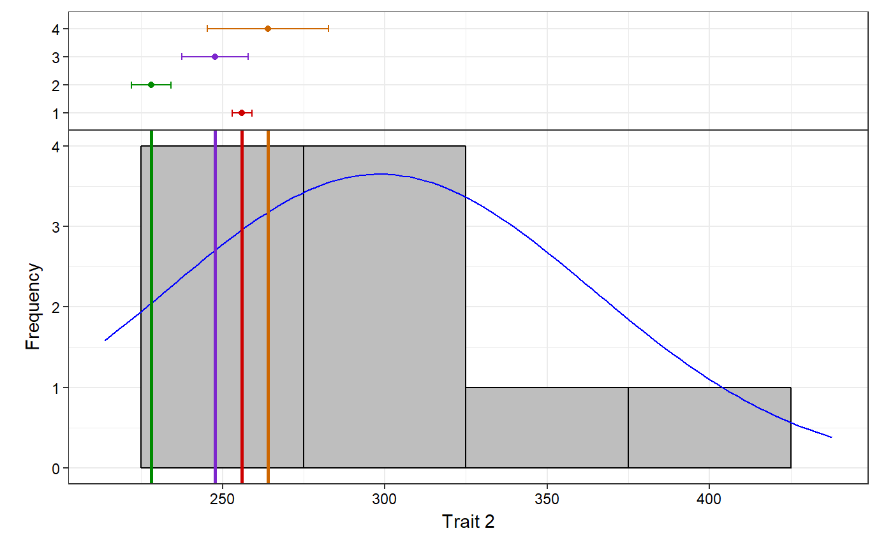
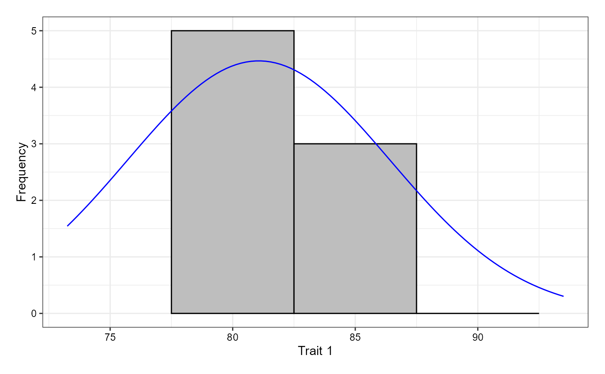
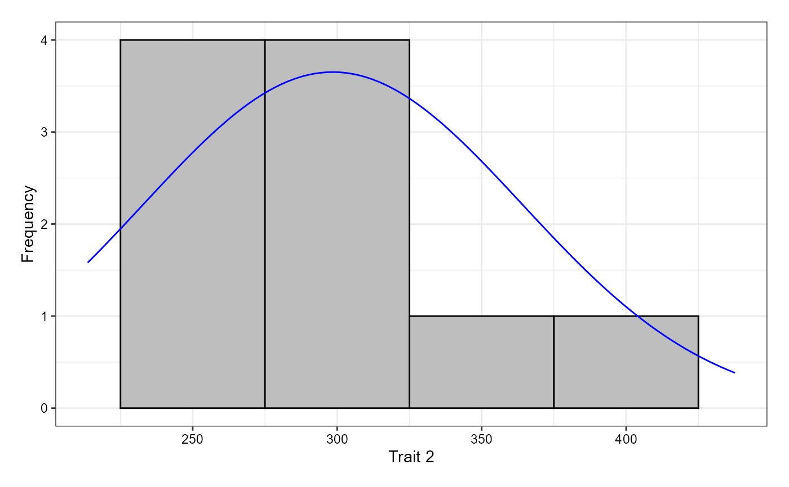

augmentedRCBD OutputR/freqdist.augmentedRCBD.R
freqdist.augmentedRCBD.Rdfreqdist.augmentedRCBD plots frequency distribution from an object of
class augmentedRCBD along with the corresponding normal curve and check
means with standard errors (if specified by argument highlight.check).
freqdist.augmentedRCBD(aug, xlab, highlight.check = TRUE, check.col = "red")
| aug | An object of class |
|---|---|
| xlab | The text for x axis label as a character string. |
| highlight.check | If |
| check.col | The colour(s) to be used to highlight check values in the
plot as a character vector. Must be valid colour values in R (named colours,
hexadecimal representation, index of colours [ |
The frequency distribution plot as a ggplot2 plot grob.
# Example data blk <- c(rep(1,7),rep(2,6),rep(3,7)) trt <- c(1, 2, 3, 4, 7, 11, 12, 1, 2, 3, 4, 5, 9, 1, 2, 3, 4, 8, 6, 10) y1 <- c(92, 79, 87, 81, 96, 89, 82, 79, 81, 81, 91, 79, 78, 83, 77, 78, 78, 70, 75, 74) y2 <- c(258, 224, 238, 278, 347, 300, 289, 260, 220, 237, 227, 281, 311, 250, 240, 268, 287, 226, 395, 450) data <- data.frame(blk, trt, y1, y2) # Convert block and treatment to factors data$blk <- as.factor(data$blk) data$trt <- as.factor(data$trt) # Results for variable y1 out1 <- augmentedRCBD(data$blk, data$trt, data$y1, method.comp = "lsd", alpha = 0.05, group = TRUE, console = TRUE)#> #> Augmented Design Details #> ======================== #> #> Number of blocks "3" #> Number of treatments "12" #> Number of check treatments "4" #> Number of test treatments "8" #> Check treatments "1, 2, 3, 4" #> #> ANOVA, Treatment Adjusted #> ========================= #> Df Sum Sq Mean Sq F value Pr(>F) #> Block (ignoring Treatments) 2 360.1 180.04 6.675 0.0298 * #> Treatment (eliminating Blocks) 11 285.1 25.92 0.961 0.5499 #> Treatment: Check 3 52.9 17.64 0.654 0.6092 #> Treatment: Test and Test vs. Check 8 232.2 29.02 1.076 0.4779 #> Residuals 6 161.8 26.97 #> --- #> Signif. codes: 0 '***' 0.001 '**' 0.01 '*' 0.05 '.' 0.1 ' ' 1 #> #> ANOVA, Block Adjusted #> ===================== #> Df Sum Sq Mean Sq F value Pr(>F) #> Treatment (ignoring Blocks) 11 575.7 52.33 1.940 0.215 #> Treatment: Check 3 52.9 17.64 0.654 0.609 #> Treatment: Test 7 505.9 72.27 2.679 0.125 #> Treatment: Test vs. Check 1 16.9 16.87 0.626 0.459 #> Block (eliminating Treatments) 2 69.5 34.75 1.288 0.342 #> Residuals 6 161.8 26.97 #> #> Treatment Means #> =============== #> Treatment Block Means SE r Min Max Adjusted Means #> 1 1 84.66667 3.844188 3 79 92 84.66667 #> 2 10 3 74.00000 NA 1 74 74 77.25000 #> 3 11 1 89.00000 NA 1 89 89 86.50000 #> 4 12 1 82.00000 NA 1 82 82 79.50000 #> 5 2 79.00000 1.154701 3 77 81 79.00000 #> 6 3 82.00000 2.645751 3 78 87 82.00000 #> 7 4 83.33333 3.929942 3 78 91 83.33333 #> 8 5 2 79.00000 NA 1 79 79 78.25000 #> 9 6 3 75.00000 NA 1 75 75 78.25000 #> 10 7 1 96.00000 NA 1 96 96 93.50000 #> 11 8 3 70.00000 NA 1 70 70 73.25000 #> 12 9 2 78.00000 NA 1 78 78 77.25000 #> #> Coefficient of Variation #> ======================== #> 6.372367 #> #> Overall Adjusted Mean #> ===================== #> 81.0625 #> #> Standard Errors #> =================== #> Std. Error of Diff. CD (5%) #> Control Treatment Means 4.240458 10.37603 #> Two Test Treatments (Same Block) 7.344688 17.97180 #> Two Test Treatments (Different Blocks) 8.211611 20.09309 #> A Test Treatment and a Control Treatment 6.704752 16.40594 #> #> Treatment Groups #> ================== #> #> Method : lsd #> #> Treatment Adjusted Means SE df lower.CL upper.CL Group #> 8 8 73.25000 5.609598 6 59.52381 86.97619 1 #> 9 9 77.25000 5.609598 6 63.52381 90.97619 12 #> 10 10 77.25000 5.609598 6 63.52381 90.97619 12 #> 5 5 78.25000 5.609598 6 64.52381 91.97619 12 #> 6 6 78.25000 5.609598 6 64.52381 91.97619 12 #> 2 2 79.00000 2.998456 6 71.66304 86.33696 12 #> 12 12 79.50000 5.609598 6 65.77381 93.22619 12 #> 3 3 82.00000 2.998456 6 74.66304 89.33696 12 #> 4 4 83.33333 2.998456 6 75.99637 90.67029 12 #> 1 1 84.66667 2.998456 6 77.32971 92.00363 12 #> 11 11 86.50000 5.609598 6 72.77381 100.22619 12 #> 7 7 93.50000 5.609598 6 79.77381 107.22619 2# Results for variable y2 out2 <- augmentedRCBD(data$blk, data$trt, data$y2, method.comp = "lsd", alpha = 0.05, group = TRUE, console = TRUE)#> #> Augmented Design Details #> ======================== #> #> Number of blocks "3" #> Number of treatments "12" #> Number of check treatments "4" #> Number of test treatments "8" #> Check treatments "1, 2, 3, 4" #> #> ANOVA, Treatment Adjusted #> ========================= #> Df Sum Sq Mean Sq F value Pr(>F) #> Block (ignoring Treatments) 2 7019 3510 12.261 0.007597 ** #> Treatment (eliminating Blocks) 11 58965 5360 18.727 0.000920 *** #> Treatment: Check 3 2150 717 2.504 0.156116 #> Treatment: Test and Test vs. Check 8 56815 7102 24.810 0.000473 *** #> Residuals 6 1717 286 #> --- #> Signif. codes: 0 '***' 0.001 '**' 0.01 '*' 0.05 '.' 0.1 ' ' 1 #> #> ANOVA, Block Adjusted #> ===================== #> Df Sum Sq Mean Sq F value Pr(>F) #> Treatment (ignoring Blocks) 11 64708 5883 20.550 0.000707 *** #> Treatment: Check 3 2150 717 2.504 0.156116 #> Treatment: Test 7 34863 4980 17.399 0.001366 ** #> Treatment: Test vs. Check 1 27694 27694 96.749 6.36e-05 *** #> Block (eliminating Treatments) 2 1277 639 2.231 0.188645 #> Residuals 6 1718 286 #> --- #> Signif. codes: 0 '***' 0.001 '**' 0.01 '*' 0.05 '.' 0.1 ' ' 1 #> #> Treatment Means #> =============== #> Treatment Block Means SE r Min Max Adjusted Means #> 1 1 256.0000 3.055050 3 250 260 256.0000 #> 2 10 3 450.0000 NA 1 450 450 437.6667 #> 3 11 1 300.0000 NA 1 300 300 299.4167 #> 4 12 1 289.0000 NA 1 289 289 288.4167 #> 5 2 228.0000 6.110101 3 220 240 228.0000 #> 6 3 247.6667 10.170764 3 237 268 247.6667 #> 7 4 264.0000 18.681542 3 227 287 264.0000 #> 8 5 2 281.0000 NA 1 281 281 293.9167 #> 9 6 3 395.0000 NA 1 395 395 382.6667 #> 10 7 1 347.0000 NA 1 347 347 346.4167 #> 11 8 3 226.0000 NA 1 226 226 213.6667 #> 12 9 2 311.0000 NA 1 311 311 323.9167 #> #> Coefficient of Variation #> ======================== #> 6.057617 #> #> Overall Adjusted Mean #> ===================== #> 298.4792 #> #> Standard Errors #> =================== #> Std. Error of Diff. CD (5%) #> Control Treatment Means 13.81424 33.80224 #> Two Test Treatments (Same Block) 23.92697 58.54719 #> Two Test Treatments (Different Blocks) 26.75117 65.45775 #> A Test Treatment and a Control Treatment 21.84224 53.44603 #> #> Treatment Groups #> ================== #> #> Method : lsd #> #> Treatment Adjusted Means SE df lower.CL upper.CL Group #> 8 8 213.6667 18.274527 6 168.9505 258.3828 12 #> 2 2 228.0000 9.768146 6 204.0982 251.9018 1 #> 3 3 247.6667 9.768146 6 223.7649 271.5685 123 #> 1 1 256.0000 9.768146 6 232.0982 279.9018 1234 #> 4 4 264.0000 9.768146 6 240.0982 287.9018 234 #> 12 12 288.4167 18.274527 6 243.7005 333.1328 345 #> 5 5 293.9167 18.274527 6 249.2005 338.6328 345 #> 11 11 299.4167 18.274527 6 254.7005 344.1328 45 #> 9 9 323.9167 18.274527 6 279.2005 368.6328 56 #> 7 7 346.4167 18.274527 6 301.7005 391.1328 56 #> 6 6 382.6667 18.274527 6 337.9505 427.3828 67 #> 10 10 437.6667 18.274527 6 392.9505 482.3828 7# Frequency distribution plots freq1 <- freqdist.augmentedRCBD(out1, xlab = "Trait 1")#> Warning: Removed 2 rows containing missing values (geom_bar).class(freq1)#> [1] "gtable" "gTree" "grob" "gDesc"plot(freq1)freq2 <- freqdist.augmentedRCBD(out2, xlab = "Trait 2")#> Warning: Removed 2 rows containing missing values (geom_bar).plot(freq2)# Change check colours colset <- c("red3", "green4", "purple3", "darkorange3") freq1 <- freqdist.augmentedRCBD(out1, xlab = "Trait 1", check.col = colset)#> Warning: Removed 2 rows containing missing values (geom_bar).plot(freq1)freq2 <- freqdist.augmentedRCBD(out2, xlab = "Trait 2", check.col = colset)#> Warning: Removed 2 rows containing missing values (geom_bar).plot(freq2)# Without checks highlighted freq1 <- freqdist.augmentedRCBD(out1, xlab = "Trait 1", highlight.check = FALSE)#> Warning: Removed 2 rows containing missing values (geom_bar).plot(freq1)freq2 <- freqdist.augmentedRCBD(out2, xlab = "Trait 2", highlight.check = FALSE)#> Warning: Removed 2 rows containing missing values (geom_bar).plot(freq2)